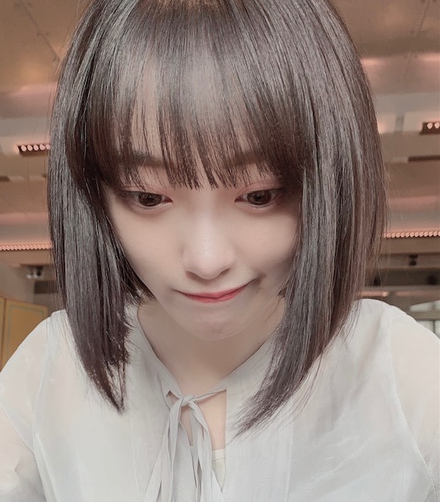

2020/1105Thu煌めく背中
先日、白石さんの卒業コンサートが
ありました。
そしてかなさんの卒業もありましたね。
ずっと乃木坂46を
引っ張ってきてくださったお二人の卒業は
時の流れを強く感じて
ただただ寂しく、でもお二人の新しい道を
応援したい気持ちと今までたくさんの背中を
見せてくださったことへの感謝の気持ちで溢れました。
そして、最後までかっこよくて
美しくてステキな先輩でした！
今まで一緒に過ごした時間は
記憶の宝物にして、私も前へ進んでいこうと思います。
本当に、本当に、お疲れ様でした☺︎
新しい道でも頑張ってください☺︎ だいすきです❤︎

もう11月ですね、、
早いです。
歌番組ラッシュ楽しみたいと思います。
みなさんも体調には気をつけて
年末を迎えてくださいね^ - ^

ん。
頑張るしかないのよ。人生。
でははは
2020/11/05 19:36
コメント(478)
白石さんも、凄いですが、堀さんの、ほうが、もっと凄いと思います。それは、堀さんは、自分で、楽しくしょうとしてる素晴らしい人だからです。堀さんの、ような、気持ちの人が、周りを救う天照さんだと、本で、読みました。天照とは、あまねく照らすという意味だから、堀さんの周りにいる人は、すごく幸せですね、そう、堀さんは、天照女神様なんです。
みおな こんばんわ
乃木中見ました。
企画を聞いた時、これは未央奈の回だってすぐに
思いましたよ。(笑)
そしたら、やっぱ未央奈が取り上げられてて、ほらって
嬉しくなりました。
楽しかったです。 未央奈が語る話もメンバーが出す
答えも・・・(笑)
みり愛ちゃんがとても辛辣な回答出していましたが、
それだけ気遣いなくいられる仲間、友達なんだろうなぁ～
って思ってます。(笑) 無表情なのが笑えました・・・（笑笑）
みり愛ちゃん自分の回答に一つも笑ってなかったですね。(笑)
相当ざっくばらんな関係なんだろうなって想像して
おります。（笑笑笑） 面白かったです。
まぁ～いつものみり愛ちゃんぽいって事かな・・・
新内姉さんの怯えた様な答えは性格だけなんだろうか？
未央奈、結構厳しくお姉さんぽく接しているのかな？
新内姉さんちょっと頼りないとか？ ギャルだし(笑)
・・・親目線的な？
立派な子に育ててあげたい！？・・・（笑）
それではグッナイ未央奈
乃木中見ました。
企画を聞いた時、これは未央奈の回だってすぐに
思いましたよ。(笑)
そしたら、やっぱ未央奈が取り上げられてて、ほらって
嬉しくなりました。
楽しかったです。 未央奈が語る話もメンバーが出す
答えも・・・(笑)
みり愛ちゃんがとても辛辣な回答出していましたが、
それだけ気遣いなくいられる仲間、友達なんだろうなぁ～
って思ってます。(笑) 無表情なのが笑えました・・・（笑笑）
みり愛ちゃん自分の回答に一つも笑ってなかったですね。(笑)
相当ざっくばらんな関係なんだろうなって想像して
おります。（笑笑笑） 面白かったです。
まぁ～いつものみり愛ちゃんぽいって事かな・・・
新内姉さんの怯えた様な答えは性格だけなんだろうか？
未央奈、結構厳しくお姉さんぽく接しているのかな？
新内姉さんちょっと頼りないとか？ ギャルだし(笑)
・・・親目線的な？
立派な子に育ててあげたい！？・・・（笑）
それではグッナイ未央奈
みおな

堀ちゃんこんばんは！
改めてまして、白石さんの卒業コンサートお疲れ様でした(^^)
ずっと乃木坂の顔として先頭で走り続けてくれて、堀ちゃんの夢にも出てくるぐらい大好きな白石さん
そして独自のスタンスで他の人には真似できない分野でも活躍し、堀ちゃんもあらゆる場面で大好きですと言っていた花奈さん
大きな存在のお二人の卒業は僕たちにとっても寂しいですが、堀ちゃんにとっては身近だった分、もっと寂しさを感じますよね( ´ ー ` )
ただ、卒業してもお二人は、いつまでも乃木坂の先輩であることは変わらず
お二人にとっての堀ちゃんは、いつまでも可愛い後輩であることも変わらないと思います(o^^o)
「一緒に過ごした時間は記憶の宝物にして」
素敵な表現です(^^)
宝物を携えながら、ときにはふと眺めてみながら、これからも堀ちゃんらしく進んでください( ´ ▽ ` )
僕たちも全力で後押しします(o^^o)
当たり前のことを言いますが、これからの乃木坂46ももちろん大好きで、ずっと応援していきますからね(*´▽｀*)
さてさて、11月ですね〜、ほんとに早い( ´ ー ` )
今年は、例年と比べると少し生き苦しい年だったかもしれませんが、それでもこんなに早く感じるのはなんだか不思議です(^^)
来年とかライブに行けるようになったりしたら、1年なんて一瞬なんだろうなぁ( ´ ▽ ` )笑
歌番組ラッシュ、毎年凄く楽しみが続く嬉しい季節です(*´▽｀*)♩
ただ、ぼくたちがめちゃくちゃ楽しみな分、堀ちゃんたちはお忙しくて大変ですよね…！
メンバーとの時間に笑い合いながら、お身体も労りながら、堀ちゃんが楽しんで過ごせたら嬉しいです(o^^o)
最近の堀ちゃんはロングで可愛いですが、インスタではショートのときの画像も載せてくれてこれまたとても可愛いです( ´ ▽ ` )♩
やっぱりショートボブが、この世で1番似合うのはたぶん君だと思う〜♩ぐらい堀ちゃん可愛いなぁと思っているところに
部屋着でツインテールの堀ちゃんも、ちょっと思考停止するぐらいめっちゃ可愛くて、僕はどっち派にもなれそうにないです(o^^o)笑
「こっちが好き！」って、ときには言ってもらえた方が嬉しいものでしょうか、それだと非常に悩ましいですが( ´ ▽ ` ;)
ロングもショートもそれぞれ違う雰囲気で素敵なのは間違いないんですが、やっぱり僕にとって行き着くところは「堀ちゃんがたまらなく可愛い」ということなんですよねぇ、どんな髪型でも大好きなんです(o^^o)
改めてお顔立ちが僕のドストライクだなぁと思う今日この頃( ´ ▽ ` )♩
そして今日の乃木中も見てました！
堀ちゃんと仲良し3人の感じがめっちゃ面白かったですが、長くなってしまうのでこの件はまた感想を書かせてください( ´ ▽ ` )笑
また明日から1週間、お互い少しでもたくさん笑って過ごせますように(o^^o)
でははは！またコメントしにきますー！
改めてまして、白石さんの卒業コンサートお疲れ様でした(^^)
ずっと乃木坂の顔として先頭で走り続けてくれて、堀ちゃんの夢にも出てくるぐらい大好きな白石さん
そして独自のスタンスで他の人には真似できない分野でも活躍し、堀ちゃんもあらゆる場面で大好きですと言っていた花奈さん
大きな存在のお二人の卒業は僕たちにとっても寂しいですが、堀ちゃんにとっては身近だった分、もっと寂しさを感じますよね( ´ ー ` )
ただ、卒業してもお二人は、いつまでも乃木坂の先輩であることは変わらず
お二人にとっての堀ちゃんは、いつまでも可愛い後輩であることも変わらないと思います(o^^o)
「一緒に過ごした時間は記憶の宝物にして」
素敵な表現です(^^)
宝物を携えながら、ときにはふと眺めてみながら、これからも堀ちゃんらしく進んでください( ´ ▽ ` )
僕たちも全力で後押しします(o^^o)
当たり前のことを言いますが、これからの乃木坂46ももちろん大好きで、ずっと応援していきますからね(*´▽｀*)
さてさて、11月ですね〜、ほんとに早い( ´ ー ` )
今年は、例年と比べると少し生き苦しい年だったかもしれませんが、それでもこんなに早く感じるのはなんだか不思議です(^^)
来年とかライブに行けるようになったりしたら、1年なんて一瞬なんだろうなぁ( ´ ▽ ` )笑
歌番組ラッシュ、毎年凄く楽しみが続く嬉しい季節です(*´▽｀*)♩
ただ、ぼくたちがめちゃくちゃ楽しみな分、堀ちゃんたちはお忙しくて大変ですよね…！
メンバーとの時間に笑い合いながら、お身体も労りながら、堀ちゃんが楽しんで過ごせたら嬉しいです(o^^o)
最近の堀ちゃんはロングで可愛いですが、インスタではショートのときの画像も載せてくれてこれまたとても可愛いです( ´ ▽ ` )♩
やっぱりショートボブが、この世で1番似合うのはたぶん君だと思う〜♩ぐらい堀ちゃん可愛いなぁと思っているところに
部屋着でツインテールの堀ちゃんも、ちょっと思考停止するぐらいめっちゃ可愛くて、僕はどっち派にもなれそうにないです(o^^o)笑
「こっちが好き！」って、ときには言ってもらえた方が嬉しいものでしょうか、それだと非常に悩ましいですが( ´ ▽ ` ;)
ロングもショートもそれぞれ違う雰囲気で素敵なのは間違いないんですが、やっぱり僕にとって行き着くところは「堀ちゃんがたまらなく可愛い」ということなんですよねぇ、どんな髪型でも大好きなんです(o^^o)
改めてお顔立ちが僕のドストライクだなぁと思う今日この頃( ´ ▽ ` )♩
そして今日の乃木中も見てました！
堀ちゃんと仲良し3人の感じがめっちゃ面白かったですが、長くなってしまうのでこの件はまた感想を書かせてください( ´ ▽ ` )笑
また明日から1週間、お互い少しでもたくさん笑って過ごせますように(o^^o)
でははは！またコメントしにきますー！
堀さん、こんばんは。
乃木坂工事中見ました。クイズにかこつけて長所言われて笑ってるのが可愛かったのと、2期生同士でいるときの堀さんが垣間見えた気がしてよかったです。
ありのままでいることを当てたのが、ニューカレドニアで話した北野さんじゃなく新内さんだったので、性格を皆に知ってもらってるんだなって思いました。
地上波でネガティブなことを言わないのが堀さんの理想像だったってことに見えて、そもそも長所に挙げてたものは全部堀さんのこうあり続けたいという理想像そのものだったように思えました。洋服あげつつ、理想を追うことの大事さを後輩さん達に沢山伝えていけたらいいですね。あとクイズ直後のＣＭがＭＶ集だったのがなんか意味深にも思えて面白かったです。
では、毎日忙しいと思うのでオフの時間を大切に過ごしてくださいね。いつも応援してます。
乃木坂工事中見ました。クイズにかこつけて長所言われて笑ってるのが可愛かったのと、2期生同士でいるときの堀さんが垣間見えた気がしてよかったです。
ありのままでいることを当てたのが、ニューカレドニアで話した北野さんじゃなく新内さんだったので、性格を皆に知ってもらってるんだなって思いました。
地上波でネガティブなことを言わないのが堀さんの理想像だったってことに見えて、そもそも長所に挙げてたものは全部堀さんのこうあり続けたいという理想像そのものだったように思えました。洋服あげつつ、理想を追うことの大事さを後輩さん達に沢山伝えていけたらいいですね。あとクイズ直後のＣＭがＭＶ集だったのがなんか意味深にも思えて面白かったです。
では、毎日忙しいと思うのでオフの時間を大切に過ごしてくださいね。いつも応援してます。
女性が主役のアクション映画
ケイトベッキンセールさん主演
「アンダーワールド」シリーズ
観たことある？
ケイトベッキンセールさん主演
「アンダーワールド」シリーズ
観たことある？
未央奈ちゃん、おはようございます。
先輩の卒業は寂しいけど、現メンバーで力を合わせてグループを盛り上げてくださいね。
歌番組ラッシュ楽しみにしています。
乃木坂46と頑張ってるcuteでsmartな未央奈ちゃんを応援しています。
先輩の卒業は寂しいけど、現メンバーで力を合わせてグループを盛り上げてくださいね。
歌番組ラッシュ楽しみにしています。
乃木坂46と頑張ってるcuteでsmartな未央奈ちゃんを応援しています。
いつも、ありがとう。
2期生を厳しく、とても大切にしてくれていることが伝わる乃木坂工事中でした。
これからも、変わらない、今のまま、ありのままの堀未央奈でいて下さい。ありがとう。
2期生を厳しく、とても大切にしてくれていることが伝わる乃木坂工事中でした。
これからも、変わらない、今のまま、ありのままの堀未央奈でいて下さい。ありがとう。
未央奈ちゃんおはようございます！ありがとうございます‼楽しみにしてます頑張ります‼今日から頑張ります‼ありがとうございます！
みおなちゃん、おはようございます。
乃木坂工事中、僕は見たよ。録画して見ました。自己分析選手権でしたね。みおなちゃん、めっちゃ綺麗で、めっちゃかわいかったです。
みおなちゃん、長所と短所クイズの出題をしてましたね。
新内さんや、みり愛さんちゃんの解答から、２期生の仲の良さがとても伝わってきましたよ。
みおなちゃん、体調に気をつけて仕事頑張ってね。
またコメントするね。
乃木坂工事中、僕は見たよ。録画して見ました。自己分析選手権でしたね。みおなちゃん、めっちゃ綺麗で、めっちゃかわいかったです。
みおなちゃん、長所と短所クイズの出題をしてましたね。
新内さんや、みり愛さんちゃんの解答から、２期生の仲の良さがとても伝わってきましたよ。
みおなちゃん、体調に気をつけて仕事頑張ってね。
またコメントするね。
こんにちは。 みおな
う～ん、コメント控えるようにと思ってるんだけど
やっぱりインスタ発見したら嬉しさの余り感想を
感謝を伝えたくて仕方ない・・・m(__)m
本題・・・（笑）
ドレッシーなロングのワンピースとてもエレガントな
装いで素敵ですよ。
この優雅な装いに黒髪ロングストレートが良く似合って
いて清楚で落ち着いた雰囲気がアップして、とても大人な
淑女になってますね。
チョーカーも良く似合っていて、美しい・・・
ここまでのチェック柄って珍しい。しかもモノトーン・・
スカートの段付き？にウェーブ、襟なしのスッキリ
した胸元（着物みたいになってるんですね？）
まさにドレスの装いに見えます。
これって自室ですか？？？
社交場・・サロンにいるみたい・・・
で、この空間にとてもマッチしているお姿・・
自分が素敵な紳士だったら・・・一曲踊ってくれませんか
って言いたくなりますね。 例えばですよ（笑笑）
でも精一杯の勇気を出して話し掛けようとするでしょうね。(笑)
いかん、また長くなっている・・・
最後にツリーどんな感じのにするのですか？
それじゃあ、あと半日お互いに頑張ろう！
追伸・・乃木中での編み込みの髪形、とても可愛かったです。
う～ん、コメント控えるようにと思ってるんだけど
やっぱりインスタ発見したら嬉しさの余り感想を
感謝を伝えたくて仕方ない・・・m(__)m
本題・・・（笑）
ドレッシーなロングのワンピースとてもエレガントな
装いで素敵ですよ。
この優雅な装いに黒髪ロングストレートが良く似合って
いて清楚で落ち着いた雰囲気がアップして、とても大人な
淑女になってますね。
チョーカーも良く似合っていて、美しい・・・
ここまでのチェック柄って珍しい。しかもモノトーン・・
スカートの段付き？にウェーブ、襟なしのスッキリ
した胸元（着物みたいになってるんですね？）
まさにドレスの装いに見えます。
これって自室ですか？？？
社交場・・サロンにいるみたい・・・
で、この空間にとてもマッチしているお姿・・
自分が素敵な紳士だったら・・・一曲踊ってくれませんか
って言いたくなりますね。 例えばですよ（笑笑）
でも精一杯の勇気を出して話し掛けようとするでしょうね。(笑)
いかん、また長くなっている・・・
最後にツリーどんな感じのにするのですか？
それじゃあ、あと半日お互いに頑張ろう！
追伸・・乃木中での編み込みの髪形、とても可愛かったです。
未央奈ちゃんは、相変わらず綺麗だなぁ～
自分はね、出来るかぎり綺麗な人、物、景色
を目に焼き付けてる…これって大事なんだなぁ
言霊ってあるくらい、言葉の魔力ってすごい
よね
気持ちが高揚したり、悲しんだり…
時には、今の自分の情景にあって元気を貰え
たりね
歌詞って、ひとつのドラマみたい
official髭男爵dismさんの I LOVE…を
よく聴いてるんだぁ～
自分はね、出来るかぎり綺麗な人、物、景色
を目に焼き付けてる…これって大事なんだなぁ
言霊ってあるくらい、言葉の魔力ってすごい
よね
気持ちが高揚したり、悲しんだり…
時には、今の自分の情景にあって元気を貰え
たりね
歌詞って、ひとつのドラマみたい
official髭男爵dismさんの I LOVE…を
よく聴いてるんだぁ～
こんにちは、今日一日お疲れさま(｡･_･｡)ﾉ明日も頑張ってね
やっほ～！
モバメありがとう！
好きな歌詞の分析かぁ！良いね！
使われてる英語の意味だったり、実際にある言葉を組み合わせた造語とかもあるし気になって調べたり楽しいよね！
(゜▽゜*)
未央奈が好きな歌詞とかどんなのがあるのか良かったらいくつか知りたいな！
インスタもいつもこまめに更新ありがとうー♪
チェックワンピースの未央奈めちゃ可愛いです(*^^*)
おでこだしのとかも良かったなー！
これからも楽しみにしてるねっ。
昨日の乃木中も観たよ！髪型すごい好きだったー！
ロボットっぽいとか言われちゃってたねw(^o^;
いろいろ長所と短所両方ともなるほどー！って納得することが多かったな☆
地上波公開ありがとうねww
モバメありがとう！
好きな歌詞の分析かぁ！良いね！
使われてる英語の意味だったり、実際にある言葉を組み合わせた造語とかもあるし気になって調べたり楽しいよね！
(゜▽゜*)
未央奈が好きな歌詞とかどんなのがあるのか良かったらいくつか知りたいな！
インスタもいつもこまめに更新ありがとうー♪
チェックワンピースの未央奈めちゃ可愛いです(*^^*)
おでこだしのとかも良かったなー！
これからも楽しみにしてるねっ。
昨日の乃木中も観たよ！髪型すごい好きだったー！
ロボットっぽいとか言われちゃってたねw(^o^;
いろいろ長所と短所両方ともなるほどー！って納得することが多かったな☆
地上波公開ありがとうねww
未央奈～！！
昨日の乃木中観たよ！
未央奈が自己分析してたね。
未央奈は面倒見いいもんね！優しいよね☺️
分かる～というところと短所は意外なこともあったよ～！
オープニングで２期生が仲良く手を繋いでいるみたいにしてるの可愛かった❤️
言葉っていいよね。
未央奈大好きだよ～！！
昨日の乃木中観たよ！
未央奈が自己分析してたね。
未央奈は面倒見いいもんね！優しいよね☺️
分かる～というところと短所は意外なこともあったよ～！
オープニングで２期生が仲良く手を繋いでいるみたいにしてるの可愛かった❤️
言葉っていいよね。
未央奈大好きだよ～！！
あ～、メロンパンも食いたい、、笑
こんにちは
この頃、寒さが一段と増してきたよね！
コロナの方も北海道で一気に増えてきてる。
向こうの人達は窓を開ける習慣が無いらしく
冬場、特に一切開けないんだって。
雪国だもん！
この頃、寒さが一段と増してきたよね！
コロナの方も北海道で一気に増えてきてる。
向こうの人達は窓を開ける習慣が無いらしく
冬場、特に一切開けないんだって。
雪国だもん！
こんばんは～♪
乃木ジャー着たんだね！制服とまた違って何か良いよねー(゜▽゜*)
オンエア楽しみだ。
ていうか、乃木ジャーの未央奈も可愛いー(//∇//)
乃木ジャー着たんだね！制服とまた違って何か良いよねー(゜▽゜*)
オンエア楽しみだ。
ていうか、乃木ジャーの未央奈も可愛いー(//∇//)
未央奈ちゃんこんばんは‼ありがとうございます！楽しみにしてます頑張ります‼今日から頑張ります‼ありがとうございます！
堀ちゃん、こんばんは＼(・∇・)／
昨日の乃木中、見たよー！
堀ちゃんの自己分析のところ、面白かったね
あと、なんか堀ちゃんの長所や短所の項目で僕自身と共通する部分がいっぱいあって驚いた！！
ありのままとか、思ったことを言っちゃうところとかは特に共感したよ
昨日の乃木中、見たよー！
堀ちゃんの自己分析のところ、面白かったね
あと、なんか堀ちゃんの長所や短所の項目で僕自身と共通する部分がいっぱいあって驚いた！！
ありのままとか、思ったことを言っちゃうところとかは特に共感したよ
乃木ジャーっていいよね。
分かる！
未央奈の名前入りの乃木ジャー、昨年買って持ってるよ♪
勿体なくてあまり着れてません。笑
寒くなってきたね～。
体調に気をつけてね☺️
分かる！
未央奈の名前入りの乃木ジャー、昨年買って持ってるよ♪
勿体なくてあまり着れてません。笑
寒くなってきたね～。
体調に気をつけてね☺️
黒髪ロング未央奈が好きだけど、アッシュ系の髪色にするのもめっちゃ楽しみ！(^^)
最近また可愛いくなったよねー！
これ以上は困りますよ。良い意味でねっ(；・∀・)
さらに好きになってしまう♪
最近また可愛いくなったよねー！
これ以上は困りますよ。良い意味でねっ(；・∀・)
さらに好きになってしまう♪
今日も一日お疲れ様でした。（笑笑）
今日の未央奈は何の仕事だったんでしょうねぇ～
いやもう昨日になるか・・・（笑）
雑誌のモデル撮影？いやインタビューか？
はたまた番組ロケ？ 歌番収録？・・・忙しかったかな？
一つ先のインスタのショット
デニムとトップス・・・なんだろね可愛いんだけど
それだけじゃないんだよねぇ～
なんかカッコイイよね。 ポーズのせいかな？
デニムのデザインが尖っているからかなぁ～
トップスはめっちゃファンシーなのにね。
でもやっぱへそ出しルックは尖ったデザインかぁ？
イケイケ系ガーリースタイルって感じ？
なんだよイケイケって！？(笑)
いや、ギャル系って言うのかなぁ～（笑笑笑）
よく知らないけど・・あははははは
ハイツインテールの髪形のロリータ風仕上げでより
可愛さを残してある的な？
なんだよロリータ風って・・・(笑)
知った被って何言ってんだつうの！？（笑笑笑）
一人ボケ一人ツッコミ風にまとめてみました。
思い付くままの言葉を全部並べてみただけです（笑）
ふんわりとそんな感じかと・・・（笑笑）
まぁ～あくまで個人的見解です・・・（笑）
ただ、結論としては未央奈はやっぱり可愛い！
しかし、ファッションセンスの守備範囲が広いなぁ～
色んな可愛いを演出出来るセンスに磨きがかかってきたよね。
自分自身のプロデュースに長けてるだけじゃなく、
他のモデルなんかのプロデュースも出来そうだよね。
葉月の変身コーデの時も彼女の違った可愛いを引き出し
ていた事思い出した。
ホントによく研究～探究してるよね。 メイクだけじゃない・・・
相当量勉強に割いてるんじゃない？（笑）
将来的に一線級のファッションコーディネーターも目標
の一つとか？
感心するばかりです。 自分も精進してまいります（笑）
色々と自分を高めていかないとね。
お互い頑張りましょう！！・・・？（笑）
それでは今宵もグッナイ未央奈
あっ一つ追加で・・・
横目の未央奈の表情全部イイですね。好きです。
でも一つ疑問です・・スマホを頭の上で構えたアップ
の時の横目・・・何を見てるんですか？（笑笑笑）
こーゆう視線をずらしてる未央奈って何故かいつも
可愛い上に魅力的なんですよねぇ～・・・
可笑しくもあり、ミステリアスでもあり（笑）
じゃあ・・改めてグッナイ未央奈ぁ～（笑）
長くてゴメン・・m(__)m、m(__)m
今日の未央奈は何の仕事だったんでしょうねぇ～
いやもう昨日になるか・・・（笑）
雑誌のモデル撮影？いやインタビューか？
はたまた番組ロケ？ 歌番収録？・・・忙しかったかな？
一つ先のインスタのショット
デニムとトップス・・・なんだろね可愛いんだけど
それだけじゃないんだよねぇ～
なんかカッコイイよね。 ポーズのせいかな？
デニムのデザインが尖っているからかなぁ～
トップスはめっちゃファンシーなのにね。
でもやっぱへそ出しルックは尖ったデザインかぁ？
イケイケ系ガーリースタイルって感じ？
なんだよイケイケって！？(笑)
いや、ギャル系って言うのかなぁ～（笑笑笑）
よく知らないけど・・あははははは
ハイツインテールの髪形のロリータ風仕上げでより
可愛さを残してある的な？
なんだよロリータ風って・・・(笑)
知った被って何言ってんだつうの！？（笑笑笑）
一人ボケ一人ツッコミ風にまとめてみました。
思い付くままの言葉を全部並べてみただけです（笑）
ふんわりとそんな感じかと・・・（笑笑）
まぁ～あくまで個人的見解です・・・（笑）
ただ、結論としては未央奈はやっぱり可愛い！
しかし、ファッションセンスの守備範囲が広いなぁ～
色んな可愛いを演出出来るセンスに磨きがかかってきたよね。
自分自身のプロデュースに長けてるだけじゃなく、
他のモデルなんかのプロデュースも出来そうだよね。
葉月の変身コーデの時も彼女の違った可愛いを引き出し
ていた事思い出した。
ホントによく研究～探究してるよね。 メイクだけじゃない・・・
相当量勉強に割いてるんじゃない？（笑）
将来的に一線級のファッションコーディネーターも目標
の一つとか？
感心するばかりです。 自分も精進してまいります（笑）
色々と自分を高めていかないとね。
お互い頑張りましょう！！・・・？（笑）
それでは今宵もグッナイ未央奈
あっ一つ追加で・・・
横目の未央奈の表情全部イイですね。好きです。
でも一つ疑問です・・スマホを頭の上で構えたアップ
の時の横目・・・何を見てるんですか？（笑笑笑）
こーゆう視線をずらしてる未央奈って何故かいつも
可愛い上に魅力的なんですよねぇ～・・・
可笑しくもあり、ミステリアスでもあり（笑）
じゃあ・・改めてグッナイ未央奈ぁ～（笑）
長くてゴメン・・m(__)m、m(__)m
お疲れさまです、堀さん。
先日配信されました白石さんの卒業ライブ、視聴しました。
そうですね、個人的に記憶に残るシーン、いっぱいあったなと思うのですけど、とくに、白石さんと乃木坂46 2期生とのバレッタ、乃木坂46 3期生との逃げ水、乃木坂46 4期生との夜明けまで強がらなくてもいいが個人的には感動しましたね。
これまで、乃木坂46を強力に支えてきた乃木坂46のレジェンドのような白石さんから後輩へのエール、乃木坂46の未来を託すかのような時間だったように個人的には感じました
素敵なライブだったと思います！
そうですね、先日放送されました乃木坂工事中、視聴しました！
そうですね、堀さんの短所1位に選ばれていた毒舌、そうですね、個人的には言いたいことをはっきり言う、時にそんな魅力となることもあるのかなと個人的には思いますね
そうですね、堀さんのそうゆうシーンおもしろいなと思うこと、よくあります（笑）
そうですね、毒舌、言いたいことをはっきり言う堀さん、そうですね、個人的にはそんな堀さんの発言がそこまで深く誰かを傷つけているといったシーンを今のところ見たこともないのではないかと思いますからね、そうですね、とりあえず、まあ、いいか、といった感じではないかと思いますね！
堀さんのインスタの投稿もよく見ています。
オシャレでかわいい投稿多いなと思います
それではまたなにかお話したいことがあればコメントするかと思います。
健康には気を付けてお過ごしください！
先日配信されました白石さんの卒業ライブ、視聴しました。
そうですね、個人的に記憶に残るシーン、いっぱいあったなと思うのですけど、とくに、白石さんと乃木坂46 2期生とのバレッタ、乃木坂46 3期生との逃げ水、乃木坂46 4期生との夜明けまで強がらなくてもいいが個人的には感動しましたね。
これまで、乃木坂46を強力に支えてきた乃木坂46のレジェンドのような白石さんから後輩へのエール、乃木坂46の未来を託すかのような時間だったように個人的には感じました
素敵なライブだったと思います！
そうですね、先日放送されました乃木坂工事中、視聴しました！
そうですね、堀さんの短所1位に選ばれていた毒舌、そうですね、個人的には言いたいことをはっきり言う、時にそんな魅力となることもあるのかなと個人的には思いますね
そうですね、堀さんのそうゆうシーンおもしろいなと思うこと、よくあります（笑）
そうですね、毒舌、言いたいことをはっきり言う堀さん、そうですね、個人的にはそんな堀さんの発言がそこまで深く誰かを傷つけているといったシーンを今のところ見たこともないのではないかと思いますからね、そうですね、とりあえず、まあ、いいか、といった感じではないかと思いますね！
堀さんのインスタの投稿もよく見ています。
オシャレでかわいい投稿多いなと思います
それではまたなにかお話したいことがあればコメントするかと思います。
健康には気を付けてお過ごしください！
未央奈ちゃん、こんばんは♪
ドリームバイトを見ました。
ユーチューブの人のお話でした。
髪の毛の手入れなどのアドバイスを聴きました。
スタジオの未央奈ちゃん、めっちゃ可愛かったよ。
みおちゃんねる というのがあれば僕は見ます。
僕は今から乃木坂工事中を見ますね。
ドリームバイトを見ました。
ユーチューブの人のお話でした。
髪の毛の手入れなどのアドバイスを聴きました。
スタジオの未央奈ちゃん、めっちゃ可愛かったよ。
みおちゃんねる というのがあれば僕は見ます。
僕は今から乃木坂工事中を見ますね。
あ～この時期になると脳内でバレッタがヘビロテや～
未央奈ちゃん、こんばんは♪
乃木坂工事中、僕は見ました。
テレビで見れないのでユーチューブで見ました。
未央奈ちゃんは切り替えが速いのですね。
未央奈ちゃんは肯定的な思考なのですね。
未央奈ちゃん、めっちゃ可愛かったよ。
レイちゃんは誰とでも話せるのですね。
レイちゃん、子供のようで可愛かったよ。
僕は臨機応変な会話が苦手なので
コメントを書くのが僕には向いています。
今回はここまでにするね☆
未央奈ちゃん、お休みね☆
乃木坂工事中、僕は見ました。
テレビで見れないのでユーチューブで見ました。
未央奈ちゃんは切り替えが速いのですね。
未央奈ちゃんは肯定的な思考なのですね。
未央奈ちゃん、めっちゃ可愛かったよ。
レイちゃんは誰とでも話せるのですね。
レイちゃん、子供のようで可愛かったよ。
僕は臨機応変な会話が苦手なので
コメントを書くのが僕には向いています。
今回はここまでにするね☆
未央奈ちゃん、お休みね☆
おはよう
今日、親と一緒に表参道のカフェ
まいやんカフェへ！
今日、親と一緒に表参道のカフェ
まいやんカフェへ！
みおなちゃん、こんにちは。
ドリームバイト、僕は見たよ。録画して見ました。
みおなちゃん、めっちゃ綺麗で、めっちゃかわいかったです。
トップYouTuberを目指すりりさんとじゅんや君、フワちゃんが指導を受けるていましたね。
りりさんとじゅんや君の動画をフワちゃんに見てもらっていまいｓたね。評価は、厳しかったですね。細かい指摘などがありましたね。宿題もでていましたね。
りりさんとじゅんや君。頑張ってほしいですね。
みおなちゃんがYouTubeチャンネルを開設したら、みおちゃんねる、僕は見ると思います。
みおなちゃん、体調に気をつけて仕事頑張ってね。
またコメントするね。
ドリームバイト、僕は見たよ。録画して見ました。
みおなちゃん、めっちゃ綺麗で、めっちゃかわいかったです。
トップYouTuberを目指すりりさんとじゅんや君、フワちゃんが指導を受けるていましたね。
りりさんとじゅんや君の動画をフワちゃんに見てもらっていまいｓたね。評価は、厳しかったですね。細かい指摘などがありましたね。宿題もでていましたね。
りりさんとじゅんや君。頑張ってほしいですね。
みおなちゃんがYouTubeチャンネルを開設したら、みおちゃんねる、僕は見ると思います。
みおなちゃん、体調に気をつけて仕事頑張ってね。
またコメントするね。
わーい♪U^q^U( だぁーい好き♪)
だぁーい好き♪)
未央奈ちゃんこんばんは‼ありがとうございます‼かなり楽しみにしてます頑張ります‼お疲れ様です！大丈夫ですか？体調は大丈夫ですか？
おかえり～
そもそもベレー帽ってどこで売ってるの？
最近帽子屋を見ない・・・（笑）
しかし、大きめのベレー帽って意外と小顔効果あるかも・・・
とても顔が小さくなった印象がある・・・
って、未央奈もともと小顔だから普通の大きさで十分効果
あるんだったね。（笑）
大きなベレー帽って見た事無いかも・・・（笑）
今日も一日お疲れ様でした。
疲れを癒す為にもお風呂で温まって下さい。
あったかい物がより美味しくなる季節に入りましたね。
そもそもベレー帽ってどこで売ってるの？
最近帽子屋を見ない・・・（笑）
しかし、大きめのベレー帽って意外と小顔効果あるかも・・・
とても顔が小さくなった印象がある・・・
って、未央奈もともと小顔だから普通の大きさで十分効果
あるんだったね。（笑）
大きなベレー帽って見た事無いかも・・・（笑）
今日も一日お疲れ様でした。
疲れを癒す為にもお風呂で温まって下さい。
あったかい物がより美味しくなる季節に入りましたね。
堀ちゃん、かわいいねー
こんばんは！
今まで何年も一緒に活動してきた、まいやん、かなりんの卒業は寂しいよね
それでも前を向いて、これからを生きてください
命を燃やして頑張れ、未央奈
俺は俺の責務を全うする
では！
今まで何年も一緒に活動してきた、まいやん、かなりんの卒業は寂しいよね
それでも前を向いて、これからを生きてください
命を燃やして頑張れ、未央奈
俺は俺の責務を全うする
では！
こんばんは～♪
お昼ヘルシーに鍋からのポテト食べちゃったんだw
でもプラマイゼロみたいな感じでちょうど良いんじゃないー？(^-^;)
全然大丈夫だよ！頑張る時に頑張って。食べる時は食べるでいこ☆
自撮りありがとー！今日も可愛いよ♪
お昼ヘルシーに鍋からのポテト食べちゃったんだw
でもプラマイゼロみたいな感じでちょうど良いんじゃないー？(^-^;)
全然大丈夫だよ！頑張る時に頑張って。食べる時は食べるでいこ☆
自撮りありがとー！今日も可愛いよ♪
未央奈ちゃんおはようございます！ありがとうございます！楽しみにしてます頑張ります‼気をつけて下さい。体調は大丈夫ですか？気をつけて下さい！ありがとうございます！お疲れ様です！
おはよう
DyDoから鬼滅の刃缶が発売されてるじゃん
今、流行ってるから二回ぐらい買ってみたんだけど
キャラクターが良いのね！
DyDoから鬼滅の刃缶が発売されてるじゃん
今、流行ってるから二回ぐらい買ってみたんだけど
キャラクターが良いのね！
この世界にはきっと、素敵なものが沢山ある
だけど理不尽なことが多い日常では、素敵なものを見落としがちだったりする
でもいつまでも素敵なものを探していたいよね！
素敵なものを沢山見つけて、笑っていたい
乃木坂を見てると、色んな素敵なものを見つけられるんだよ
そして素敵なものがまだまだあるんだと教えられている気がする
堀ちゃんも素敵なもの、これからも沢山見つけていこう
それで笑って、感動して、ワクワクして
それでいいんだよ
この世はきっと、素敵で溢れてるよ
だけど理不尽なことが多い日常では、素敵なものを見落としがちだったりする
でもいつまでも素敵なものを探していたいよね！
素敵なものを沢山見つけて、笑っていたい
乃木坂を見てると、色んな素敵なものを見つけられるんだよ
そして素敵なものがまだまだあるんだと教えられている気がする
堀ちゃんも素敵なもの、これからも沢山見つけていこう
それで笑って、感動して、ワクワクして
それでいいんだよ
この世はきっと、素敵で溢れてるよ
今日もお疲れ～
疲れた時こそ、ゆっくり寝た方がいいよ！
家帰るとお姉ちゃんがハイジ流してるの？
アルプスとハイジって事でしょ笑
疲れた時こそ、ゆっくり寝た方がいいよ！
家帰るとお姉ちゃんがハイジ流してるの？
アルプスとハイジって事でしょ笑
おつかれさま～！
モバメありがとう(゜▽゜*)
疲れてるときは早く寝るにかぎるよね！
寒いから暖かくしてね。
おー、お姉ちゃんハイジ流してるんだ家に帰ると流れてるのって何か良いね(*^^*)w
確かにまったりするよねー。あとチーズとか食べたくなるw
インスタにあげてくれた未央奈ママさんとのハワイの動画での謎テンションが今日イチで好きです♪
ってことでw
おやすみー！またね♪
モバメありがとう(゜▽゜*)
疲れてるときは早く寝るにかぎるよね！
寒いから暖かくしてね。
おー、お姉ちゃんハイジ流してるんだ家に帰ると流れてるのって何か良いね(*^^*)w
確かにまったりするよねー。あとチーズとか食べたくなるw
インスタにあげてくれた未央奈ママさんとのハワイの動画での謎テンションが今日イチで好きです♪
ってことでw
おやすみー！またね♪
堀さん、こんばんは。
ar見ましたよ。寺田さんとの写真は決めてたり笑顔だったりいい写真ばかりですね。ビッグシュシュもとてもお似合いです。
髪型ヒストリーはそれぞれが雰囲気全然違って自由自在で凄いですね。その上に載ってる傾いた堀さんもとても可愛いです。ボブで傾いてる堀さんを見てると何だか枕草子の「うつくしきもの」を思い出します。
あと今泉監督の短編の予告も見ましたよ。本編楽しみに待ってますね。それにしても寺田さんとの写真でもテーマだったし、堀さんは目を離すとすぐおフランスに行ってしまうんですね。
それとインスタグラムのおやすみなさい動画、とてつもない可愛さですね。なんか日に日に可愛くなってってる気がします。
堀さんの頑張りに僕はいつも本当に助けられてます。いつもありがとうございます。日々忙しいと思うので沢山寝てくださいね。おやすみなさい。
ar見ましたよ。寺田さんとの写真は決めてたり笑顔だったりいい写真ばかりですね。ビッグシュシュもとてもお似合いです。
髪型ヒストリーはそれぞれが雰囲気全然違って自由自在で凄いですね。その上に載ってる傾いた堀さんもとても可愛いです。ボブで傾いてる堀さんを見てると何だか枕草子の「うつくしきもの」を思い出します。
あと今泉監督の短編の予告も見ましたよ。本編楽しみに待ってますね。それにしても寺田さんとの写真でもテーマだったし、堀さんは目を離すとすぐおフランスに行ってしまうんですね。
それとインスタグラムのおやすみなさい動画、とてつもない可愛さですね。なんか日に日に可愛くなってってる気がします。
堀さんの頑張りに僕はいつも本当に助けられてます。いつもありがとうございます。日々忙しいと思うので沢山寝てくださいね。おやすみなさい。
突然の２６枚目シングル選抜発表の予告きましたね！
どうなるんだろう。。
どうなるんだろう。。
未央奈ちゃんこんばんは‼ありがとうございます‼楽しみにしてます頑張ります‼気をつけて下さい。体調に気をつけて下さい！ありがとうございます‼
今日はお母さんの誕生日！
プレゼント買ってきたー
仕事帰り原宿寄って選んできた。
プレゼント買ってきたー
仕事帰り原宿寄って選んできた。
古い映画が好きでポセイドンアドベンチャーって
映画見てね
映画見てね
未央奈ちゃん、おはよう。
目覚めに美味しそうな料理見ました。
僕は寝起きでもいけるよ。ありがとう⁉︎
今週は何があったかな…、…、…。
あ、8thのバスラ発売のニュース。
時期が丁度クリスマスなんで僕へのプレゼント
と思って買います。最近のサンタさんは
ギブアンドテイクになっているようです。笑
それとセブンイレブンアプリ。
そりゃあ、楽しみです。楽しみですよ？
でもね、本音を言ったら見たくない気持ちも。
いいんですか？本気で好きになるよ？
いや、今も好きが溢れるくらい好きなんですが
なんて言うのか例え方がよく分からない…
キュン死するかもしれません。
後は選抜発表があるね。
今までも活動してはいたけど正式な発表は
久しぶりになるんですかね？僕はファン歴が浅い
のでよく分からないけど、ようやく再始動だね。
期待は重圧になってしまう事もあるのでしょうか。
あえて書きません。いいシングルになると
良いですね。
では。
目覚めに美味しそうな料理見ました。
僕は寝起きでもいけるよ。ありがとう⁉︎
今週は何があったかな…、…、…。
あ、8thのバスラ発売のニュース。
時期が丁度クリスマスなんで僕へのプレゼント
と思って買います。最近のサンタさんは
ギブアンドテイクになっているようです。笑
それとセブンイレブンアプリ。
そりゃあ、楽しみです。楽しみですよ？
でもね、本音を言ったら見たくない気持ちも。
いいんですか？本気で好きになるよ？
いや、今も好きが溢れるくらい好きなんですが
なんて言うのか例え方がよく分からない…
キュン死するかもしれません。
後は選抜発表があるね。
今までも活動してはいたけど正式な発表は
久しぶりになるんですかね？僕はファン歴が浅い
のでよく分からないけど、ようやく再始動だね。
期待は重圧になってしまう事もあるのでしょうか。
あえて書きません。いいシングルになると
良いですね。
では。
大好き。
これからもずっと。
元気でね。
これからもずっと。
元気でね。
・へい未央奈( 'Θ' )
・アイアムへのへの！アイアムへのへの？(未央奈：意味がわかんない！←)
という訳で『ガーディアンズオブギャラクシー』を観たよ未央奈(^^)メインキャラのアライグマのロケットは、マスコット的キャラクターだと思ってたが、全然可愛さはなかったな。笑
マイスパイの主人公してたデイブ氏もメインキャラで出演してるが、このガーディアンズでも良い味出してたから、これからもっと活躍して欲しい(^^)
・今日はこの後もう一本洋画を見る予定_(┐「ε:)_(今日中には観れないかもだが。笑)がんばみおなー
・アイアムへのへの！アイアムへのへの？(未央奈：意味がわかんない！←)
という訳で『ガーディアンズオブギャラクシー』を観たよ未央奈(^^)メインキャラのアライグマのロケットは、マスコット的キャラクターだと思ってたが、全然可愛さはなかったな。笑
マイスパイの主人公してたデイブ氏もメインキャラで出演してるが、このガーディアンズでも良い味出してたから、これからもっと活躍して欲しい(^^)
・今日はこの後もう一本洋画を見る予定_(┐「ε:)_(今日中には観れないかもだが。笑)がんばみおなー
まずは来年1月、26枚目シングル発売
おめでとう！
11月15日の乃木坂工事中の中で選抜発表する
みたいで今からドキドキです。
まいやんが卒業して始めてのシングル。
誰がセンターになるか分からないですけど、
新しい乃木坂を象徴するセンターになる事は
間違いないはずです。
FNS歌謡祭第1夜出演おめでとう
まいやんが卒業して久しぶりの音楽番組
テレビで久しぶりに観れることも嬉しく思います
おめでとう！
11月15日の乃木坂工事中の中で選抜発表する
みたいで今からドキドキです。
まいやんが卒業して始めてのシングル。
誰がセンターになるか分からないですけど、
新しい乃木坂を象徴するセンターになる事は
間違いないはずです。
FNS歌謡祭第1夜出演おめでとう
まいやんが卒業して久しぶりの音楽番組
テレビで久しぶりに観れることも嬉しく思います


早く会いたいよ～！！
突然ごめんね。
来年は落ち着いて、イベントなどで会いたいものですね。
これからも雑誌や歌番組、ブログやmailなどで元気な姿を見れるのを楽しみにしてます！
元気貰ってます☺️☀️
ずっと応援してるよー！
おやすみおな～(*´～｀*)